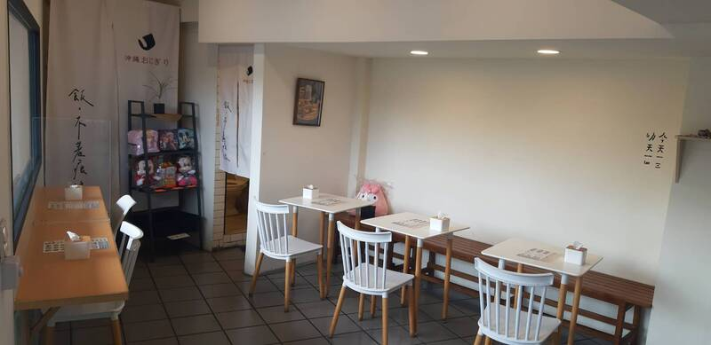

About

飯不著痕跡
成立於2020年，所在位置在豐原國中85度c左手邊（加油站斜對面）奶茶色房子。
販售日式沖繩飯糰，有別於一般古早味飯糰，品項多元有創意，包在飯糰裡面的餡料超乎想像～以海苔壽司飯包覆著飽滿餡料，有炸蝦、牛肉排、干貝酥、可樂餅多種口味選擇，飲品有燕麥奶、紅茶、豆乳，成為早午餐的新選擇！
瓦斯使用安全「昇來瓦斯」，讓美好早餐時光輕鬆又放心。
提供放鬆時間的氛圍，簡的風格白色與木頭搭配，可以悠閒吃早午餐～
